二人で入れる、二霊墓
ご夫婦・ご家族、そして都内では珍しく、ご友人同士でも、お二人で一緒にお入りいただけます（七寸壺にて二霊まで）。
子どもに、墓守の負担を残したくない方へ
玉泉院の「連理の墓」
23年間は、二人のお墓として。
その後は永代供養墓で、玉泉院が供養を続けます。
まずは実際のお墓をご覧になってから、ゆっくりご検討ください。
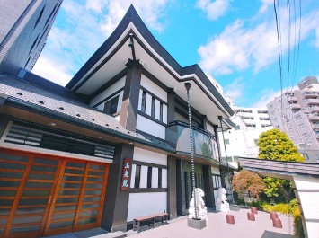
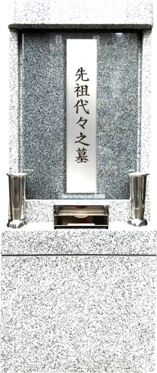
そんな方に、玉泉院がご提案するお墓が
「連理の墓」です。
宗派は問いません。
納骨後は日蓮宗の宗旨にて供養いたします。
連理の墓とは
「連理の墓」は、ご遺骨を二霊まで納められるお墓です。ご夫婦・ご家族・ご友人など、大切な方と二人で一緒にお入りいただけます。宗派は問いません（納骨後は日蓮宗の宗旨にて供養いたします）。
使用期間は23年間で、延長も可能です。期限を迎えたあとは、一霊につき10万円で玉泉院の永代供養墓に移し、永代に渡って供養いたします。
名前の由来「連理の枝」
一本の幹から伸びる二本の枝のように、
いつまでも変わらぬ絆を結ぶ。
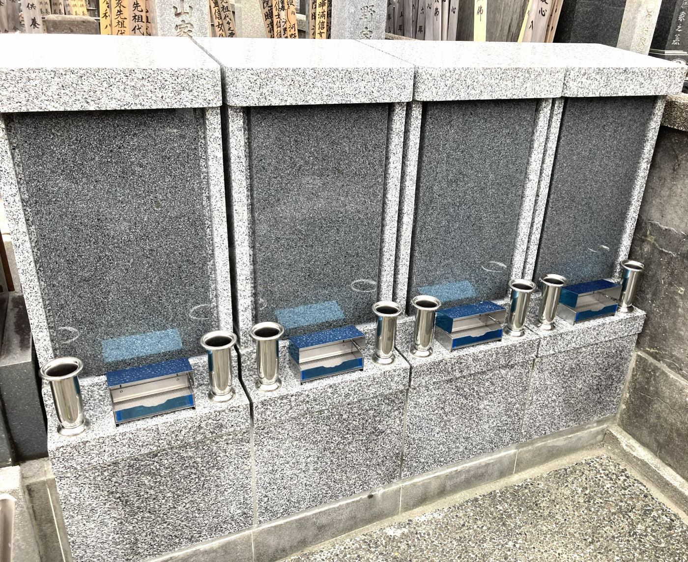
FEATURES
ご夫婦・ご家族、そして都内では珍しく、ご友人同士でも、お二人で一緒にお入りいただけます（七寸壺にて二霊まで）。
墓石を新たに建てないため、墓石の建立費用はかかりません。将来、墓石を解体する費用も不要です。お花やお線香をお供えでき、墓碑プレートも作成できます。
23年間は、二人のお墓としてお参りいただけます。その後は延長するか、玉泉院の永代供養墓に移り、永代に渡って供養が続きます。
23年後のこと
期限は、お墓がなくなる日ではありません。
期限を迎えたあとの行き先も、はじめから決まっています。
はじめに
本堂にて納骨供養を行ったのち、納骨します。七寸壺にて二霊まで納められます。納骨作業は石材店が行います（実費1万円程度）。
23年間
ご自身たちだけのお墓として、いつでもお参りいただけます。お花やお線香もお供えできます。
23年後
延長する
使用期間の延長も可能です。
延長の条件・費用はお問い合わせください。
永代供養墓へ移す
一霊につき10万円で、玉泉院の永代供養墓に移します。
その後
永代供養墓に移したあとも、玉泉院が永代に渡って供養いたします。
墓石を建てないお墓なので、将来、墓石を解体する費用もかかりません。
23年後のことなど、気になる点はお気軽にご相談ください。
見学・相談を申し込む「連理の墓」は、ご夫婦に限らずご利用いただけます。
ご夫婦で
これからも、二人一緒に。
ご家族で
大切な家族と、同じお墓に。
ご友人と
都内では珍しく、ご友人同士でもご利用いただけます。
PRICE
使用料
80万円
二霊・23年間
護持会費
年 1万2000円
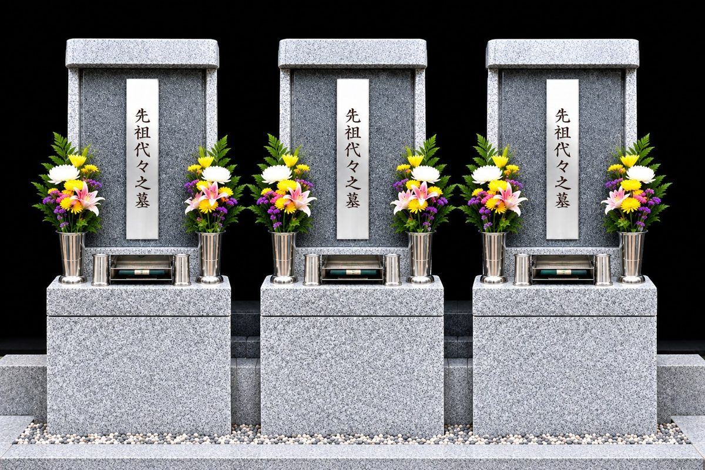
費用について、わからないことはお気軽にお尋ねください。
見学・相談を申し込む| 一般的なお墓（一般的な例） | 連理の墓 | |
|---|---|---|
| 墓石 | 建てる必要があります | 建てる必要はありません |
| 墓石の建立費用 | かかります | 不要 |
| 墓石の解体費用 | 墓じまいの際にかかります | 不要 |
| 宗派 | 墓所によって条件があることも | 問いません |
| 入れる人数 | 墓所によって異なります | 二霊（七寸壺） |
| 使用期間 | 継ぐ方がいる限り続くのが一般的 | 23年間（延長も可能） |
| その後の供養 | 継ぐ方が引き継ぐのが一般的 | 永代供養墓へ（一霊10万円） |
※「一般的なお墓」は一般的な例です。実際の内容は墓所によって異なります。
玉泉院について
明暦年間から続く玉泉院。
お墓を建てることだけでなく、その後の供養まで。
「連理の墓」は、玉泉院がこれからの時代の
お墓のあり方としてご提案するものです。
長晶山 玉泉院
東京都江東区・清澄白河に佇む日蓮宗の寺院。明暦年間（1655〜1658年）、長昌山日覚上人により開山創始されました。
当山の祖師尊像は、大正12年の関東大震災、昭和20年の東京大空襲という二度の大災厄を免れたことから、「火伏せの祖師」として広く知られています。
境内には、明治期の日本画の巨匠・橋本雅邦の墓や、第6代横綱・阿武松緑之助の墓所があり、歴史と芸術に触れられる由緒ある寺院です。
静かな寺町の中にありながら、駅から近く、
これから先もお参りに通いやすい場所です。
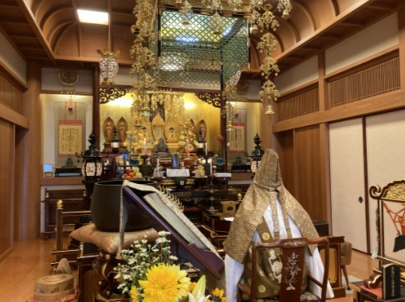
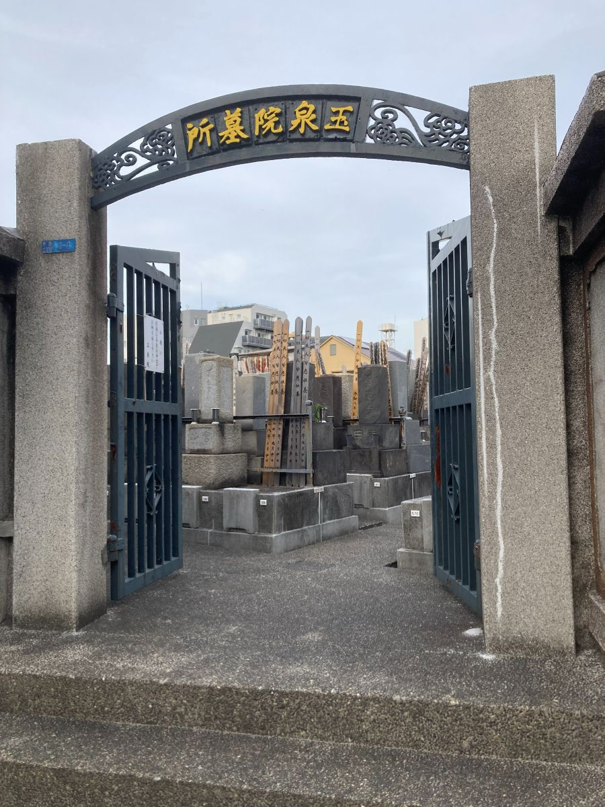
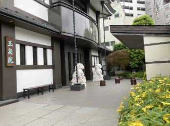
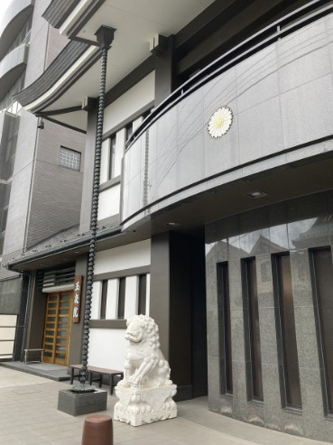
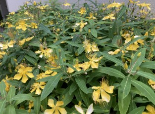
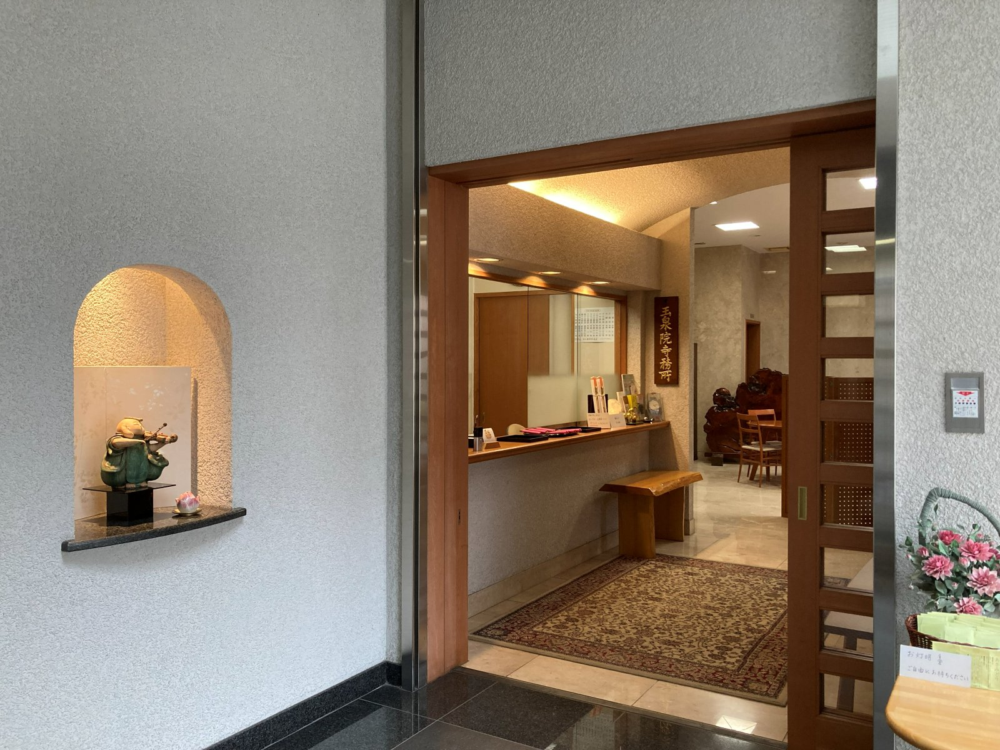
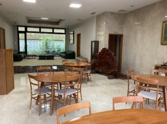
ACCESS
駅から歩いて4分。
これから先も、お参りに通いやすい場所です。
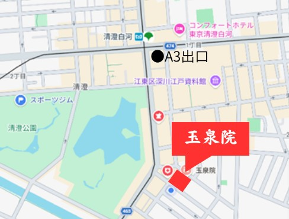
FAQ
使用期間を延長するか、一霊につき10万円で玉泉院の永代供養墓に移します。永代供養墓に移したあとも、玉泉院が永代に渡って供養いたします。
延長も可能です。延長の条件・費用については、お問い合わせください。
はい。ご夫婦のほか、ご家族やご友人と、お二人でご利用いただけます。
はい。ご友人同士でもご利用いただけます。
はい。お申込みできます。
ありません。納骨後は日蓮宗の宗旨にて供養いたします。
必要ありません。墓石の建立費用・解体費用はかかりません。
はい、お供えいただけます。墓碑プレートの作成も可能です。
七寸壺にて二霊まで納められます。お骨を玉泉院にお持ちいただき、本堂にて納骨供養を行ったのち、納骨となります。納骨作業は石材店が行い、納骨作業費（実費1万円程度）を石材店へお支払いいただきます。
一霊につき10万円です。
はい。お問い合わせフォームまたはお電話（毎日 9:00〜17:00）でお申し込みください。
お骨を玉泉院にお持ちいただきまして、納骨供養を本堂にて行い、納骨となります。
連理の墓の大きさや雰囲気、お参りのしやすさなどを、
実際にご覧いただけます。
ご相談だけでも、お気軽にどうぞ。
フォームは24時間受付。担当者より折り返しご連絡いたします。
お電話でも承ります 03-3641-0573 （毎日 9:00〜17:00）